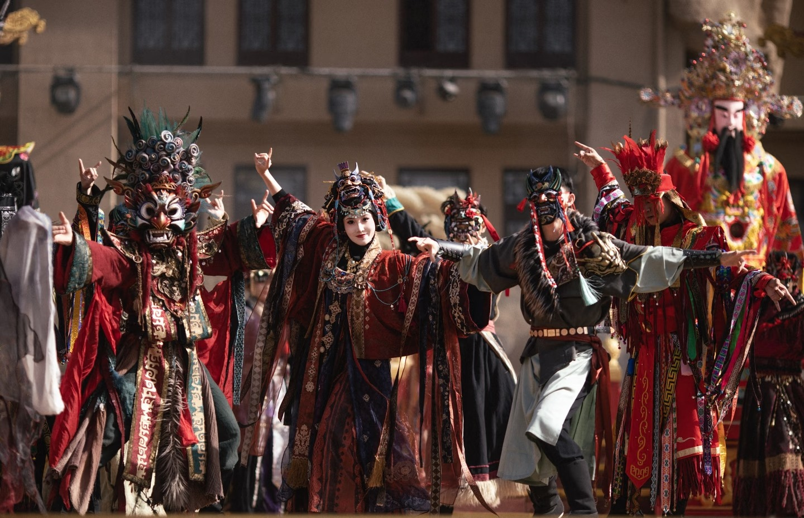
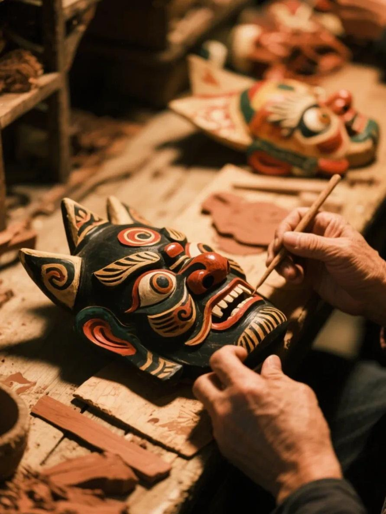
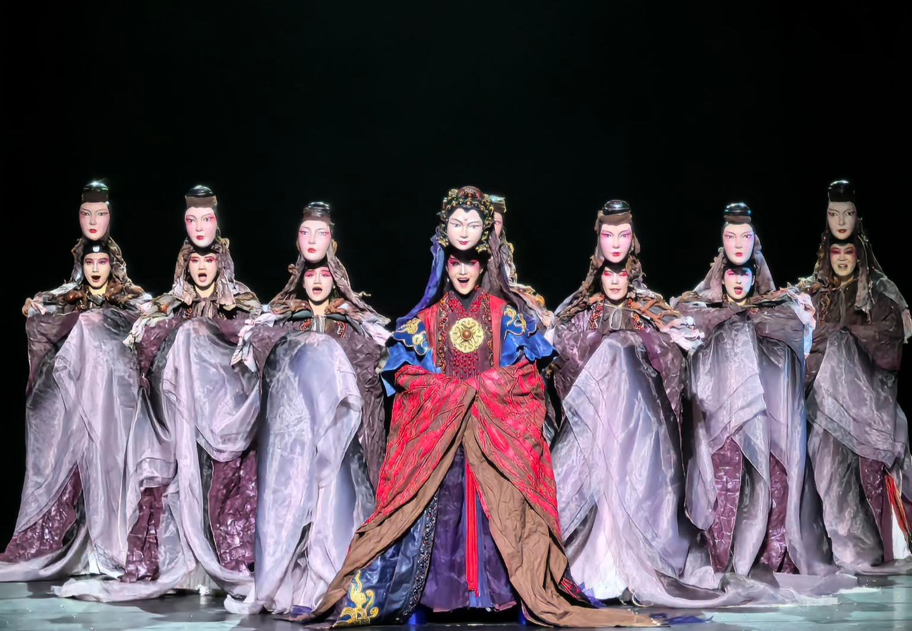
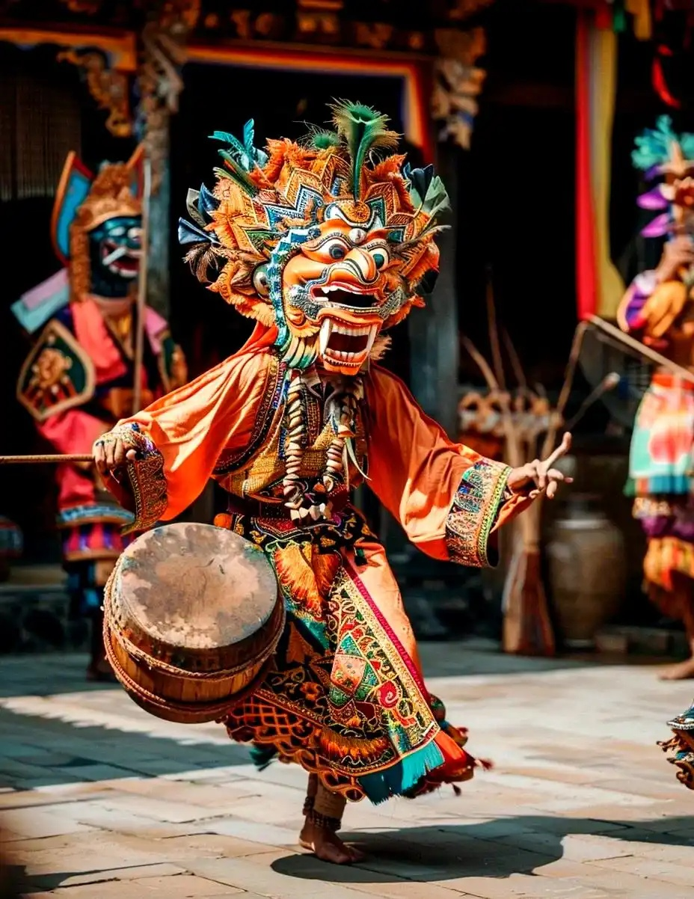

· 壹 ·
文化展演
傩戏艺术

面具下的神圣仪式
傩戏，又称"傩堂戏"、"端公戏"，是中国最古老的祭祀性戏剧形态之一。 它发端于商周时期的驱鬼逐疫仪式，历经三千年流变，至今仍在贵州、江西、 湖南、安徽等地流传，被列入国家级非物质文化遗产名录。
傩戏的核心在于"面具"——每一副面具代表一位神灵或历史人物，演员戴上面具 即成为神灵的化身，在鼓乐声中完成人与天地的神圣对话。

文化展演

傩戏，又称"傩堂戏"、"端公戏"，是中国最古老的祭祀性戏剧形态之一。 它发端于商周时期的驱鬼逐疫仪式，历经三千年流变，至今仍在贵州、江西、 湖南、安徽等地流传，被列入国家级非物质文化遗产名录。
傩戏的核心在于"面具"——每一副面具代表一位神灵或历史人物，演员戴上面具 即成为神灵的化身，在鼓乐声中完成人与天地的神圣对话。
经典剧目
精选最具代表性的傩戏表演剧目，感受不同地域、不同风格的祭祀艺术

手工艺术
精选贵州德江、江西南丰等地传承人手工雕凿的傩戏面具，涵盖正神、凶神、世俗人物三大谱系，每一副面具皆为匠心独运的非遗手工珍品。

传统服饰
传统傩戏演出专用戏服，包含法袍、战裙、云肩、头帻等全套行头，以手工刺绣、蜡染等古法工艺精制而成，还原千年祭祀仪轨的庄严风貌。

线下演出
汇聚《开山猛将》《判官勾簿》《傩公傩母》《关公斩妖》等经典傩戏剧目，贵州、江西、湖南、安徽四地班社轮番登台，沉浸式感受千年傩文化的现场震撼。

民俗乐器
傩戏伴奏所用的牛角号、傩鼓、铜锣、钹、师刀等传统民俗乐器，每件承载着沟通天地的神圣寓意，是傩仪音乐不可或缺的灵魂之器。
文化亮点
灵魂载体
傩面具是傩戏的灵魂。每一副面具均由传承人手工雕凿，经选材、雕刻、打磨、上色、开光等多道工序制成，以夸张的造型和鲜明的色彩传达神灵的性格与法力。
仪式核心
傩戏演出严格遵循传统祭祀仪轨，分为"开坛"、"请神"、"演剧"、"送神"四大环节。在鼓、锣、牛角号的庄严伴奏中，法师焚香祷告，迎请神灵降临。
薪火相传
傩戏面临传承危机，全国现存傩戏班社不足百个，老艺人年事已高。 近年来，各地政府与文化机构积极开展抢救性保护工作，通过数字化记录、 传承人培养、文化生态保护区建设等方式，守护这份珍贵的文化遗产。